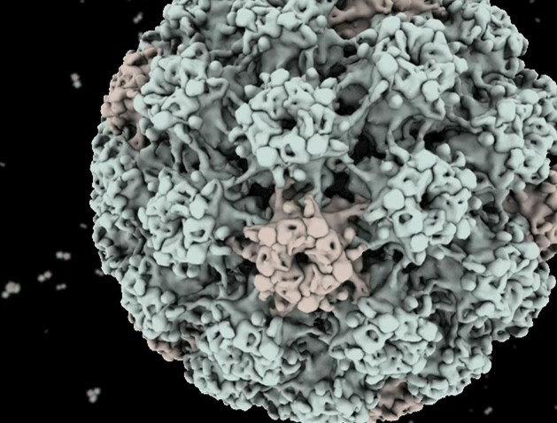
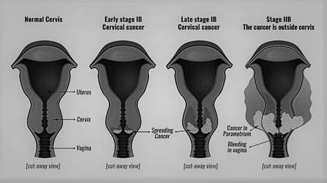

HPV (HUMAN PAPİLLOMA VİRÜS) NEDİR?
Cinsel yolla bulaşan ve yaygın olarak görülen bir enfeksiyondur. Cinsel olarak aktif olan kişilerin yaklaşık %50 si hayatlarının bir bölümünde HPV (HUMAN PAPİLLOMA VİRÜS) ile enfekte olurlar. Çoğu insanda hiçbir soruna yol açmasa da hiç belirti vermemesi kişinin HPV enfeksiyonu taşımadığı anlamına gelmez. Çoğunlukla HPV bağışıklık sistemi tarafından temizlenir. HPV enfeksiyonlarının çoğu 6 ay ile 1 yıl arasında geçmektedir. HPV enfeksiyonları genital siğil ve kansere yol açarlar. 100’den fazla HPV tipi mevcut olup hepsi kanser oluşturmaz. HPV bulaşması için cinsel ilişki şart değildir. HPV genital bölgelerin teması genital bölge ile temas etmiş havlu gibi eşyaların ortak kullanımı yolu ile de bulaşabilir. Belirti vermediği için enfekte olup olmadığının anlaşılması için bazı özel testler yapılmaktadır.
HPV tipleri ile bazı önemli hastalıklara sebep olabilir: Genital siğiller, servikal kanserler, anal kanserler, penis kanseri, vulva kanseri, vajinal kanserler, baş boyun kanserleri, liken planus
HPV Tanısı
HPV testi rahim ağzı kanserleri için de bakılan bir tarama testi olan HPV pap smear testi olarak bilinir. Tarama için serviksten hücre örneği sürüntü alınarak bakılır. 30 ile 65 yaş arasında bakılan bir toplum tarama testidir. Kadınlarda beş yılda bir yapılır. Taramanın amacı serviks kanseri olan kişilerin erken tanı almasını sağlamaktır. HPV aşıları ise genital siğil ve serviks kanseri yapan tiplere karşı koruma sağlarken tüm tiplere karşı koruma sağlamaz.
HPV Aşısı
Ülkemizde bivalan ve kuadrıvalan aşı kullanılmaktadır. Bivalan aşı HPV tip 16 ve tip 18’e karşı koruyucudur. HPV aşılarından en sık kullanılan kuadrivalan aşı serviks kanserine en sık sebep olan HPV TİP 16 VE TİP 18 ve genital siğillere yol açan HPV tip 6 ve tip 11 e karşı koruyuculuk sağlar. FDA tarafından onaylanmış olan aşı hem kız hem de erkek çocuklara uygulanabilen bir aşıdır. Kız çocuklara ve kadınlara virüsle karşılaşmadan önce yapıldığında serviks kanserine karşı önemli bir koruyuculuk sağlar. Özellikle cinsel birliktelik başlamadan yapılması önemlidir.
HPV aşısının erkeklere uygulanmak istenmesinin en önemli nedeni erkeklerden kadınlara HPV bulaşma riskini azaltacağının öngörülmesidir. Dünya Sağlık Örgütü serviks kanserine karşı 9-13 yaş grubu kız çocuklara aşı yapılmasını önermektedir.
11-12 yaş kız ve erkek çocukları ilk doz HPV aşısı ile aşılanabilir. Bu yaş aralığı 11-12 yaşta bu virüsle karşılaşmadığı düşünülerek belirlenmiştir. İki doz arasında en az 6 ay olacak şekilde yapılmalıdır.15 yaşa kadar iki doz koruyuculuk sağlarken 15-26 yaş arasında koruyuculuk için üç doz aşı uygulanmalıdır.27-45 yaş arasında ise doktor kontrolü sonrasında aşı uygulanması önerilir. HPV aşıları hamile ve ciddi hastalık öyküsü olanlara önerilmez. Ciddi allerji öyküsü olanlara ve ilk doz da allerji gelişenlere de önerilmez.
HPV aşısı rutin takvimde yer alıyor mu?
HPV aşısı rutin aşı takviminde henüz yer almıyor. Ancak Sağlık Bakanı Fahrettin Koca belirlenen bir grupla aşılamanın başlayacağının ve kademe kademe artırılacağının açıklamasını yapmıştır.
HPV aşısıyla ilgili test kiti üretimi için Türkiye Sağlık Enstitüleri Başkanlığımızı görevlendirdik. Bir ayı geçmeden yerli üretim HPV kitinin kullanıma alınmasını sağlayacağız.
— Dr. Fahrettin Koca (@drfahrettinkoca) November 27, 2022
TBMM Plan ve Bütçe Komisyonu, Sorulara Cevaplar pic.twitter.com/mKutAJNrdl
RAHİM AĞZI(SERVİKS) KANSERİ
Rahim ağzı kanseri dünyada kadınlarda en sık görülen akciğer kanseri ve kolorektal kanserlerden sonra üçüncü sırada görülmektedir. Nedeni tam olarak açıklanabilmiş, önlenebilen tek kanserdir.
Rahim ağzı (serviks) rahmin vajinaya açılan dar boynudur. Serviks hücreleri anormal kontrolsüz bir şekilde büyümeye başladığında rahim ağzı kanseri oluşmaktadır.
Rahim ağzında bu değişimi yapan en önemli etken HPV (HUMAN PAPİLLOMA VİRÜS)’dür.
Düzelmeyen inatçı HPV vakaları kanser oluşturur. Rahim ağzı kanserine en çok sebep olan HPV 16 ve HPV 18’dir.
- Genç yaşta cinsel ilişkiye başlamak,
- Çok sayıda cinsel partner,
- Çok sayıda cinsel partneri olan partnerle cinsel ilişki,
- Sigara kullanmak,
- Sebze ve meyveden fakir beslenmek,
- Düşük sosyoekonomik durum,
- Çok sayıda doğum yapmak,
- Obezite,
- Ailede serviks kanser öyküsü,
- Daha önce serviks kanser tanısı almış olmak,
- Uzun süre doğum kontrol hapları kullanmak,
- Düzenli sağlık kontrollerine katılmamak,
- Düzenli tarama testleri yaptırmamak diğer risk faktörlerindendir.
Rahim ağzı kanserinin belirtileri kanser ileri bir aşamaya geldiğinde belirti vermektedir.
Rahim ağzı kanserinin belirtileri nelerdir?
- Cinsel ilişki sonrası anormal kanama
- Anormal düzensiz vajinal kanama
- Cinsel ilişki sırasında ağrı
- Vajinal rahatsızlık
- Yoğun vajinal kokulu akıntı
- Tek bacakta şişlik
- Sırt ve bacak ağrıları
- İdrar yaparken ağrı hissi, kanama
Erken teşhis ve taramalar ile tam tedavisi mümkündür. Dünya Sağlık Örgütü bütün ülkelerde tarama önermektedir. Rahim ağzı kanserinin %99,9 nedeni HPV enfeksiyonlarıdır. HPV testleri taramada yer almakta ve rahim ağzında virüs tespit edildiğinde pap smear ile tekrar değerlendirilmektedir.
Ülkemizde ulusal kanser tarama standartlarına göre 30-65 yaş arası her kadın 5 yılda bir HPV Testi ile taranmaktadır. Pozitif çıkan vakalar pap smear le tekrar değerlendirilmektedir. HPV testi ve smear ağrısız basit bir işlemdir. Ucuz ve kolay uygulanabilir bir yöntemdir.
Düzenli sağlık kontrollerine gitmek, 30 yaş sonrası taramalara düzenli katılmak, güvenli cinsel ilişki, sigara kullanmamak, sağlıklı beslenmek korunmada önemlidir.
Düzenli taramalara katılan bir kadının rahim ağzı kanserinden ölmeyeceğini söyleyebiliriz. Erken teşhis edildiğinde %100 tedavi edilebilir bir kanserdir.
Ülkemizde kanser taramaları Kanser Erken Teşhis, Tarama ve Eğitim Merkezleri (KETEM) tarafından yapılmaktadır. Ketem her ilimizde hizmet vermektedir. Bu merkezlerde doktor, hemşire, ebe, röntgen teknisyenleri çalışmaktadır. Kanser erken tarama ve teşhis merkezlerinde meme kanseri, rahim ağzı kanseri ve kolorektal kanser taramaları yapılmaktadır.
Unutmayalım ki, ERKEN TANI HAYAT KURTARIR!
Nilüfer KETEM Tel: 0 (224) 441 74 79
Yıldırım KETEM Tel: 0 (224) 366 55 99
Osmangazi KETEM Tel: 0 (224) 232 25 44